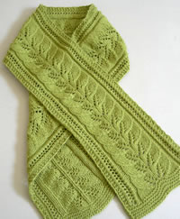
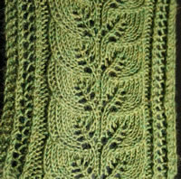
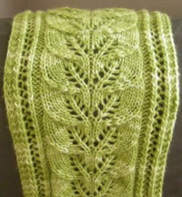
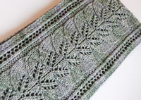
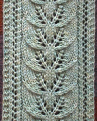
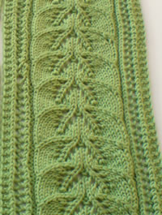
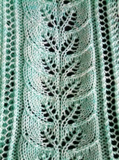

Brooke's Column of Leaves Knitted Scarf PatternWelcome to Brooke's Column of Leaves Knitted Scarf Pattern! Below you will find the pattern and links to printer-friendly text and chart. Make sure to check out the matching Column of Leaves Knitted Hat Pattern and the Column of Leaves Photoset on Flickr. If you have made this scarf, please send me photos so I can post them here!
|
Matching Accessories and Other Goodies
Gallery
|
 By Bangle House in Malabrigo Yarn Merino Worsted  By Gail in Berroco Ultra Alpaca Light  By Maggi in Malabrigo Yarn Merino Worsted  By Meghan in Handmaiden Fine Yarn Silk Maiden |
 By Joshua in Plymouth Galway Highland Heather  By Rukaya in Wolle Rodel Siena Big  By Julie in McShake |
The Pattern
(includes charted pattern)
My original scarf was made with Mountain Colors 4/8 Wool, a worsted weight yarn, on size 7 needles. But you can do this on any size yarn and needles you want - even lace weight yarn. This pattern is very easy to memorize after a few repeats, making for quick and fun work. And don't forget to block it after you're done! That is the key step in making the leaf pattern lie flat and become really defined.
Yarn: I used one and a half skeins of Mountain Colors 4/8s wool, which is worsted weight and has 250 yds per 100 gm skein. So that would be about 375 yards of worsted weight yarn.
Dimensions: With a worsted weight yarn, the scarf is approximately 6 inches wide and 73 inches long. You can make it longer or shorter if you wish.
Selected abbreviations:
p2tog tbl = purl 2 together through back loops
SKP = slip 1, k1, psso (psso = pass slipped stitch over knit stitch)
Slip 1 = slip 1 knitwise
Notes:
Edges: To make a nice finished edge, on the first and last stitch
of each row, you slip 1 knitwise on all RS rows, and p1 on all WS rows.
Also, to make the edges lie flat, the next two stitches on the edge are
worked in garter stitch by knitting every row (this is written into the
pattern).
The number of stitches alternates between 39 and 41. You start off the scarf by casting on 39 stitches, but once you start the pattern, on row 1 and every odd row (RS row) thereafter, you make two yarn-overs that don't have compensating decreases in the same row. Therefore, you end up with two extra stitches - for a total of 41 stitches - at the end of all RS rows. Then in the next row, you make two decreases (p2tog and p2tog tbl) which compensate for the two YOs in the previous row, so then you are back to 39 stitches at the end of every WS row. On the charted pattern, these two "missing stitches" are denoted by the gray squares.
Instructions:
Cast on 39 stitches.
Knit about 1 inch of garter stitch edging as follows:
(WS) p1, knit across until last stitch, p1
(RS) slip 1, knit across until last stitch, slip 1
Repeat for about 8 rows, or until it is as long as you like. End on a WS row.
Row 1 (RS): slip 1, k2, SKP, yo, k2, p2, K7, k2tog, yo, k1, yo, p1, yo, k1, yo, SKP, k7, p2, SKP, yo, k4, slip 1 (You will have 41 stitches on your needle at the end of this row, and at the end of all RS rows.)
Row 2 (WS): p1, k2, p2tog, yo, p2, k2, p6, p2tog tbl, p3, k1, p3, p2tog, p6, k2, p2tog, yo, p2, k2, p1 (You will have 39 stitches on your needle at the end of this row, and at the end of all WS rows.)
Row 3 (RS): slip 1, k2, SKP, yo, k2, p2, k5, k2tog, k1, (yo, k1) twice, p1, k1, (yo, k1) twice, SKP, k5, p2, SKP, yo, k4, slip 1
Row 4 (WS): p1, k2, p2tog, yo, p2, k2, p4, p2tog tbl, p5, k1, p5, p2tog, p4, k2, p2tog, yo, p2, k2, p1
Row 5 (RS): slip 1, k2, SKP, yo, k2, p2, k3, k2tog, k2, yo, k1, yo, k2, p1, k2, yo, k1, yo, k2, SKP, k3, p2, SKP, yo, k4, slip 1
Row 6 (WS): p1, k2, p2tog, yo, p2, k2, p2, p2tog tbl, p7, k1, p7, p2tog, p2, k2 p2tog, yo, p2, k2, p1
Row 7 (RS): slip 1, k2, SKP, yo, k2, p2, k1, k2tog, k3, yo, k1, yo, k3, p1, k3, yo, k1, yo, k3, SKP, k1, p2, SKP, yo, k4, slip 1
Row 8 (WS): p1, k2, p2tog, yo, p2, k2, p2tog tbl, p9, k1, p9, p2tog, k2, p2tog, yo, p2, k2, p1
Repeat these 8 rows until the scarf is the length you want. Then repeat the instructions for garter stitch edge, then bind off, and weave in ends. It is very important to block this scarf to get the pattern to lie flat.
|
This site in the Free Knitting Patterns Netring is owned by Brooke's Column of Leaves Knitted Scarf Pattern. [ Previous | Next | Random Site | List Sites ] |
| Brooke's Column of Leaves Scarf Pattern is covered by a Creative Commons Attribution 3.0 License, which allows you to distribute, remix, tweak, and build upon this work, even commercially, as long as you credit me for the original creation. In other words, please feel free to adapt the pattern to your own creation, use the pattern for a class or in your store, or even sell a scarf you have knitted from the pattern. |